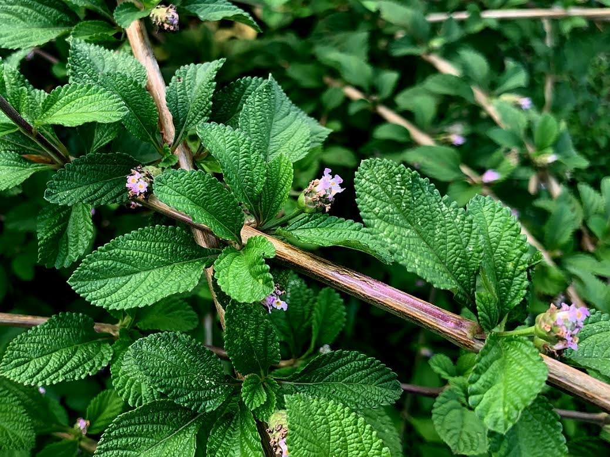

Juanilama (Lippia alba)
Características
Arbusto aromático con hojas utilizadas en infusiones.
Hábitat y distribución
Zonas tropicales de América; común en Costa Rica.
Comportamiento
Prefiere suelos húmedos y bien drenados; florece en verano.
Estado de conservación
No amenazado.
¿Dónde encontrarla?
Cultivada en huertos y jardines.
Curiosidades
- Tradicionalmente utilizada para aliviar problemas digestivos y nerviosos.